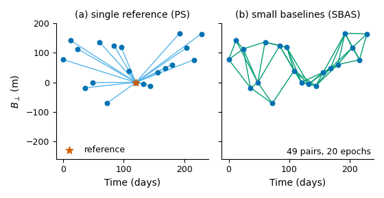

| SAR Concepts: InSAR Time Series | |
A single interferogram mixes ground motion with atmosphere, orbit errors and decorrelation noise. Time-series methods use many acquisitions of the same area to separate slow, consistent motion from errors that are random from date to date, and they give a displacement value for every date. The three families differ in which pixels they trust and which interferograms they form.
Turbulent atmosphere (see atmospheric phase) is close to random in time, while deformation is usually smooth. A velocity from N dates averages many independent atmospheric states, and its uncertainty falls as the observation period grows. A stack also shows which pixels keep a stable phase over time.
Some pixels are dominated by one strong, stable reflector, such as a building corner or a rock face. Their phase stays coherent even in interferograms with long temporal and perpendicular baselines. PS methods pair every acquisition with one common Reference (a single-reference, or "star", network), work at full resolution, and select the stable pixels from the time series itself. The original permanent-scatterer method of Ferretti et al. (2001) selects pixels by amplitude stability. StaMPS (Hooper et al., 2004) selects them by phase stability, which also works in natural terrain. PS gives dense points in cities and on bare rock, few in vegetation. As a guide, it needs about 20 or more acquisitions.
SBAS forms only interferograms with short temporal and perpendicular baselines, which decorrelate least. It multilooks them, unwraps each one, and inverts the network pixel by pixel for the phase at each date. For a pair k between epochs m(k) and s(k):
Δφk = φs(k) − φm(k), k = 1 … M
M equations in N−1 unknowns (one epoch is the reference, set to zero) are solved by weighted least squares. The network must be connected: if it falls apart into groups of dates with no pair between them, the system is rank-deficient. Berardino et al. (2002) bridge the gaps with an SVD minimum-norm solution. Every extra pair adds redundancy, which helps find unwrapping errors.

Figure 1. Interferogram networks for a synthetic 20-date, 12-day stack, plotted as time against perpendicular baseline B⊥. (a) Single-reference network, as used for PS analysis. (b) Small-baseline network (pairs at most 36 days and 150 m apart), as used for SBAS.
Most natural surfaces (fields, debris, sparse vegetation) contain many small scatterers per resolution cell. Every single interferogram of such a distributed scatterer (DS) is noisy. However, the N×N coherence matrix of all pairs holds redundant information. Phase-linking methods first select statistically homogeneous pixels (SHPs): neighbours whose amplitude time series pass a two-sample test. They then estimate the covariance matrix over the SHPs and find the N phases θn that best fit all N(N−1)/2 pairwise phases at once. The estimators differ:
The fit quality is measured by the temporal coherence (0 = random, 1 = perfect), where φij is the phase of the estimated coherence between dates i and j:
γT = 2 / (N(N−1)) · | Σi<j exp( j(φij − (θi − θj)) ) |
For a single point scatterer, phases add up around a triplet of dates:
φ12 + φ23 − φ13 = 0. Multilooked DS interferograms violate this.
Changes in soil moisture and vegetation leave a non-zero closure phase (De Zan et al., 2014). A network built
only from very short pairs then accumulates a systematic bias that does not average out and can look like slow
motion (Ansari, De Zan & Parizzi, 2021). Phase linking over all pairs, or adding longer pairs to the network,
reduces the bias. An unwrapping error instead leaves a closure of a whole multiple of 2π. SBAS Inversion's
closure_phase_rms wraps each closure to (−π, π], so it shows the sub-cycle closure phase
but does not reveal whole-cycle unwrapping errors.
The in-house chain for a coregistered stack (Back-Geocoding + ESD and TOPSAR-Deburst for Sentinel-1 TOPS) is:
KS,
AD or TLog test, using the EVD (default) or EMI
estimator. The reference epoch defaults to the median date.
It writes phase-linked SLC bands i_pl_*/q_pl_* (amplitude unchanged) and a
tempCoh_<pol> band. Pixels with fewer than max(shpMin = 20, N) SHPs, or with
γT below tempCohMin (0.6), are passed through with their original SLC values.
It estimates the full stack at once, so very long stacks (more than about 50 dates) are slow.UnwPhase_ifg_<tag> band (unit
abs_phase) and passes the coh_* bands through, so its output feeds SBAS Inversion
directly. If you unwrap the pairs outside SNAP instead, import each result with SNAPHU Import, each time with
the previous import (at first the interferogram product) as the first input; for a stack with more than one
Secondary it keeps the UnwPhase_ifg_<tag> names, sets the unit abs_phase and
copies the coh_* bands from the first input. Leave Do NOT save Wrapped interferogram
unticked, or the coherence bands and earlier pairs are lost.phase or abs_phase and "unw" in the
name; bands without a unit are skipped. It reads the pair dates from the last two
ddMMMyyyy tokens of each unwrapped band name and pairs each with the coh_* band
that has the same dates. Pairs are keyed by these two dates only, so keep one polarisation and one
sub-swath per product. At least 3 epochs are required. Equations with coherence below 0.3 are dropped, and
the rest are weighted by coherence (coherenceLooks 100). When the condition number exceeds
106 (for example a disconnected network), it applies Tikhonov regularisation (weight 10−3)
instead of SVD. Outputs: phase_<date> (rad), displacement_<date> (mm),
velocity and velocity_uncertainty (mm/year), temporal_coherence
(|mean exp(j·residual)|), closure_phase_rms (default on; no-data where no triplet has
all three pairs above the coherence threshold, for example in a sequential network) and optional
residual_* bands. The velocity is an unweighted least-squares line through the
per-epoch phases. Results are relative to the reference epoch, not to a reference point; see
phase to displacement.SBAS Inversion orders the epochs by date and negates the phase of a pair whose first date is the later one, so
either order is accepted. This also covers interferograms from a single-reference stack whose Reference is not the
earliest date. The residual_* band of such a pair is named and signed in date order (earlier date
first).
Export to external tools:
rslc, diff0, geo, dem folders) for
StaMPS PS processing. Only the PSI format is implemented; setting psiFormat to false stops with
"SBAS format is not yet supported". It does not accept burst TOPS input.velocity as absolute. Subtract a stable reference area first.closure_phase_rms and add longer pairs or use phase linking.Related concepts: InSAR, coherence, phase unwrapping, phase to displacement, atmospheric phase.
Workflows: InSAR Time Series.